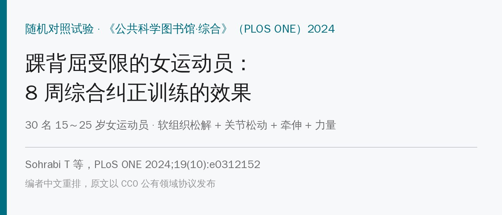
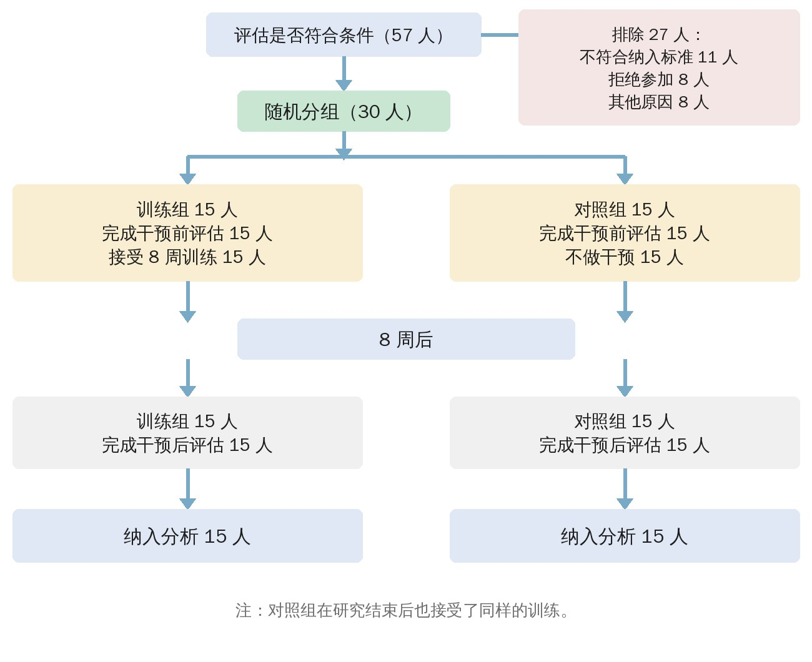
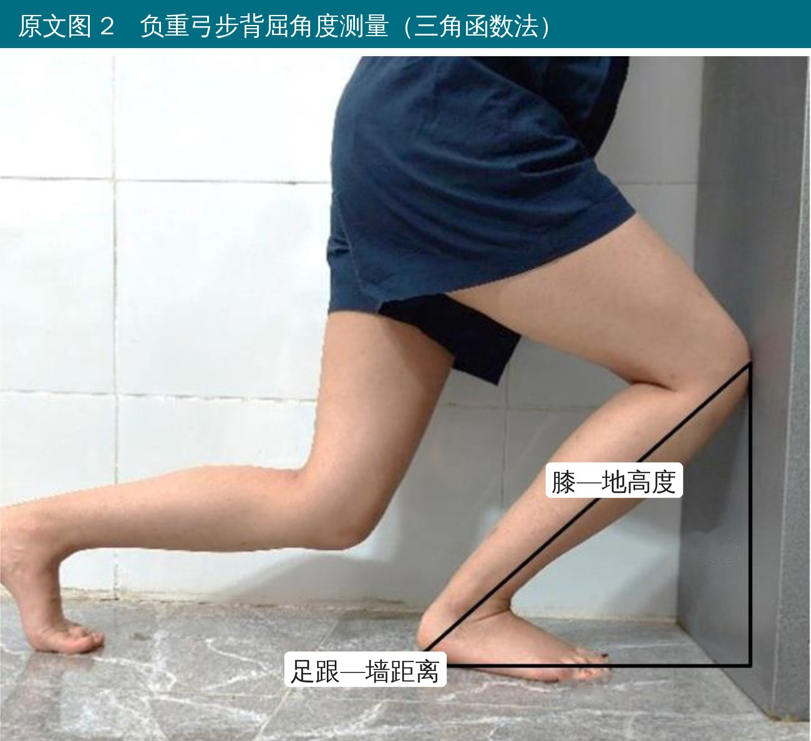
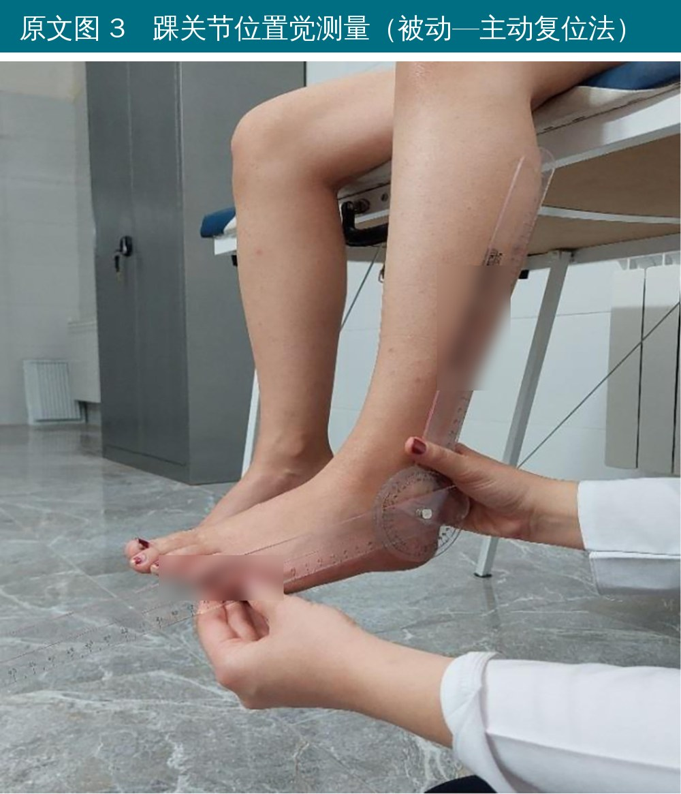
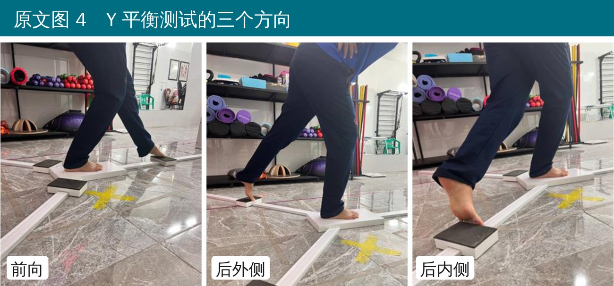
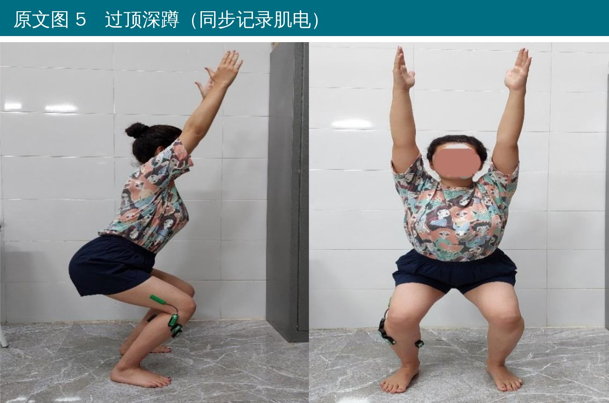
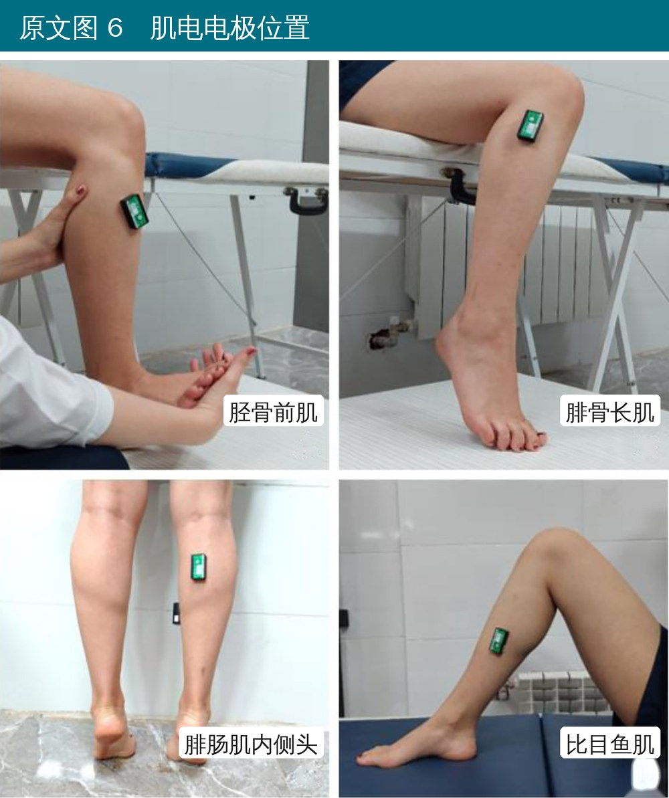
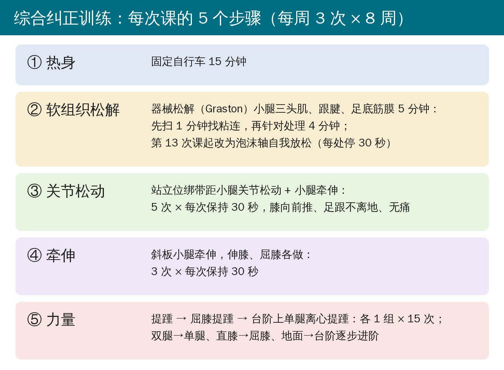
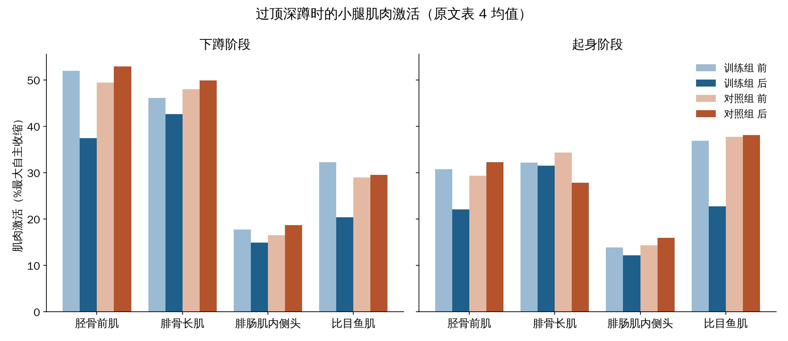

🔖原文信息（编者中文重排）
📚 文献信息
▪ Sohrabi T, Saki F, Ramezani F, Tahayori B. Comprehensive corrective exercise program improves ankle function in female athletes with limited weight-bearing ankle dorsiflexion: A randomized controlled trial. PLoS ONE. 2024;19(10):e0312152.
▪ 作者来自伊朗布阿里·西纳大学运动康复系、美国圣奥古斯丁健康科学大学物理治疗系
▪ 单盲随机对照试验；DOI：10.1371/journal.pone.0312152
弓步时膝盖顶不到墙、深蹲脚跟抬起来——这类踝背屈受限在运动员里很常见。它不只是“脚踝有点紧”：前瞻性研究发现，负重背屈小于 34° 的人，肌腱病风险高 2.5 倍，还和膝关节问题、腘绳肌拉伤、踝扭伤有关。
背屈卡住的原因不止一个：小腿三头肌紧、距骨在踝穴里往后滑不够、胫腓和距下关节的附属运动丢了……所以只做牵伸往往不够。这篇伊朗的随机对照试验就把软组织松解 + 关节松动 + 牵伸 + 力量打包成一套“综合纠正训练”，看 8 周后背屈角度、位置觉、动态平衡和小腿肌肉激活会不会变。
先说结论：训练组背屈多了约 7.5°、Y 平衡多了约 7 cm、位置觉误差少了约 3°，三项都超过了最小可测变化和最小临床重要差异；过顶深蹲时胫骨前肌和比目鱼肌的激活明显下降。对照组基本没变。
• 对象：哈马丹市体育俱乐部 30 名女运动员，15～25 岁，每周训练 ≥ 3 次（每次 60 分钟），BMI 20～25
• 纳入：负重弓步背屈 < 34°；排除：疼痛、下肢手术史、半年内下肢受伤，以及器械松解的禁忌（动脉硬化、血栓、严重静脉曲张、皮肤感染、肿瘤、急性炎症等）
• 随机分两组各 15 人：训练组做 8 周综合纠正训练；对照组不做任何干预（研究结束后再给训练）
• 评估者不知道分组（单盲）；只测优势腿（踢球那条腿），每项测 3 次取平均

🔖原文图 1 受试者流程（中文重绘）
• 背屈角度：靠墙弓步、足跟不离地，量膝到地面的高度和足跟到墙的距离，用三角函数算角度（背屈 = 90° − arctan[膝地高度/跟墙距离]），信度 0.97
• 位置觉：坐在床边、双脚悬空、蒙眼戴降噪耳机；检查者把踝被动放到 跖屈 20° 停 5～10 秒，重复 3 次，回中立位后让受试者自己找回这个角度，记录误差
• 动态平衡：Y 平衡测试，前、后内、后外三个方向，按腿长标准化算综合分
• 肌电：胫骨前肌、腓骨长肌、腓肠肌内侧头、比目鱼肌贴电极，做过顶深蹲（屈膝 80°，节拍器控制：2 拍下、1 拍停、2 拍起），按最大自主收缩标准化

🔖原文图 2 负重弓步背屈角度测量

🔖原文图 3 踝关节位置觉测量

🔖原文图 4 Y 平衡测试三个方向

🔖原文图 5 过顶深蹲

🔖原文图 6 肌电电极位置
每周 3 次、共 24 次课，都是物理治疗师一对一在大学康复中心带着做。每次课按“松 → 动 → 拉 → 练”的顺序走 5 步：

🔖每次课的 5 个步骤（编者根据原文表 1 和方法部分整理）
下肢热起来，后面的松解和牵伸更容易做开。
俯卧，髋完全伸直、膝稍屈、踝跖屈（让小腿处在放松位）。在腓肠肌、跟腱和足底筋膜上抹介质，用 Graston 器械：
• 先用扫的手法全面扫 1 分钟找粘连，再用 4 分钟针对粘连处理
• 第 1～6 次课：器械和皮肤成 30°～45°，中等压力，扫、扇形、挖的手法各个方向都做
• 第 7～12 次课：角度加到 约 60°，压力加大
• 第 13 次课起改成泡沫轴自我放松：滚到小腿痛点处停 30 秒，共 5～8 分钟
从治疗师做、到自己做，这个过渡设计得很实用——后半程病人已经学会在家自己放。
两脚前后站，训练腿在后，两脚前后错开约 12～14 cm。一条固定在稳定物上的绑带套在踝关节前方（相当于把胫骨远端往后拉住），然后膝慢慢往前推进入背屈，足跟全程不离地、整个过程不痛。
做 5 次，每次保持 30 秒。原理是固定住胫骨、让距骨相对后滑，同时把小腿也拉开，一个动作兼顾关节和肌肉。
站在斜板上，直膝拉腓肠肌，屈膝拉比目鱼肌，各 3 次 × 30 秒。作者引用的研究认为，松解之后马上牵伸，软组织的黏弹性更容易被改变，效果更好。
• 提踵 → 屈膝提踵（偏比目鱼肌）→ 台阶上单腿离心提踵，各 1 组 × 15 次
• 进阶顺序：双腿 → 单腿、直膝 → 屈膝、地面 → 台阶
• 原文说会按个人进步调整组数、次数和阻力，但没给具体数字
离心提踵在台阶上做，脚跟下沉的过程本身就是一次负重下的背屈，力量和活动度一起练。
| 指标 | 训练组 前 | 训练组 后 | 对照组 前 | 对照组 后 | 交互 P / 效应量 |
|---|---|---|---|---|---|
| 背屈角度（°） | 32.57 ± 2.47 | 40.05 ± 4.33 | 31.71 ± 2.25 | 31.71 ± 2.69 | 0.001 / 0.714 |
| 位置觉误差（°） | 6.77 ± 1.92 | 3.81 ± 2.33 | 6.96 ± 2.90 | 8.57 ± 4.44 | 0.005 / 0.253 |
| Y 平衡（cm） | 84.96 ± 5.99 | 92.02 ± 5.20 | 85.77 ± 9.15 | 86.14 ± 7.22 | 0.001 / 0.423 |
三项的改善都超过了最小可测变化（MDC）和最小临床重要差异（MCID）。按个人算，训练组 15 人里，背屈 15 人全部达标，位置觉 10 人、平衡 7 人达标；对照组分别是 3、4、0 人。

🔖过顶深蹲时小腿肌肉激活（编者根据原文表 4 数值绘图）
肌电方面：训练后过顶深蹲时，胫骨前肌下蹲时从 52% 降到 37%、起身时从 31% 降到 22%；比目鱼肌下蹲从 32% 降到 20%、起身从 37% 降到 23%。腓骨长肌没变。腓肠肌内侧头只有下蹲阶段的交互作用勉强显著（P = 0.048），组内前后比较其实不显著。
怎么理解“激活下降”？背屈受限的人蹲下时，小腿前后的肌肉会一起绷紧（共同收缩），把踝关节“锁”住，结果就更蹲不下去。训练后同样的动作用更少的肌肉力气就能完成，可以理解为踝关节不那么僵了。
• 对照组什么都不做：训练组每周 3 次见治疗师，对照组连安慰性干预都没有，部分改善可能来自关注和练习效应
• 样本小（每组 15 人），全是女性，只测了训练刚结束的效果，没有随访，也没有看受伤率——讨论里说“可以预防踝扭伤”，这一步证据并没有
• 四种方法打包在一起，分不清哪一步最关键；也没有和“单纯牵伸”比较
• 统计细节有出入：30 人全部纳入分析，但报告的 F 值自由度是 (1, 23)，应为 (1, 28)；胫骨前肌下蹲阶段 P = 0.005，给出的 95% 置信区间却是 −1.31～15.07（跨过 0），腓肠肌也一样；背屈角度的置信区间单位写成了“%”
• 摘要和讨论都说腓肠肌内侧头激活“显著下降”，但组内前后比较 P = 0.184，只有交互作用显著
• 方法写“每次 30 分钟”，但光热身就 15 分钟，加上松解 5 分钟、松动 2.5 分钟、牵伸 3 分钟、力量练习，很难在 30 分钟内做完
• 位置觉测的是跖屈 20°，而干预针对的是背屈，两者的联系作者没有讨论
这套方案最大的好处是简单、可复制、一次课 30～40 分钟：一台自行车、一套刮痧器械（或泡沫轴）、一根绑带、一块斜板、一个台阶就够了。如果你在给背屈受限的运动员做预防，可以直接照这个顺序走：先松小腿 → 绑带松动距小腿关节 → 直膝屈膝都牵 → 提踵到单腿离心。
另外两个细节值得注意：一是器械松解的强度按次数递进（角度和压力都往上加），后半程交给病人自己用泡沫轴；二是关节松动时足跟一定不能抬，抬了就变成代偿，练不到真正的背屈。
至于能不能减少踝扭伤，这篇没有回答，需要有随访和受伤率的研究来验证。
原文表 1 综合纠正训练方案
| 项目 | 内容 | 剂量 |
|---|---|---|
| 热身 | 固定自行车 | 15 分钟 |
| 软组织松解 | 扫小腿 1 分钟找粘连，剩余 4 分钟针对粘连处理。前 6 次课器械 30°～45°、中等压力，扫、扇、挖手法各方向；第 7～12 次课角度增至 60°，压力加大 | 5 分钟 |
| 第 12 次课后改用泡沫轴自我放松小腿，在痛点停 30 秒 | 5～8 分钟 | |
| 关节松动 | 站立位小腿牵伸 + 绑带距小腿关节松动 | 5 次，每次保持 30 秒 |
| 牵伸 | 斜板小腿牵伸，伸膝和屈膝各做 | 3 次，每次保持 30 秒 |
| 力量 | 提踵；屈膝提踵；台阶上单腿离心提踵 | 1 组 × 15 次 |
原文表 2 两组基本情况（均值 ± 标准差）
| 变量 | 训练组 | 对照组 | P |
|---|---|---|---|
| 年龄（岁） | 20.13 ± 2.26 | 20.40 ± 2.66 | 0.770 |
| 身高（cm） | 161.66 ± 4.73 | 161.17 ± 4.15 | 0.767 |
| 体重（kg） | 58.79 ± 7.30 | 60.30 ± 11.78 | 0.676 |
| BMI（kg/m²） | 22.49 ± 2.66 | 23.21 ± 4.53 | 0.602 |
| 运动年限（年） | 5.30 ± 1.88 | 5.61 ± 2.66 | 0.737 |
P 值来自独立样本 t 检验。
原文表 3 训练对背屈、位置觉和平衡的影响
| 指标 | 训练组 前→后 | 组内 P | 对照组 前→后 | 组内 P | F(1,23) | 交互 P | 效应量 |
|---|---|---|---|---|---|---|---|
| 背屈角度（°） | 32.57 ± 2.47 → 40.05 ± 4.33 | 0.001 | 31.71 ± 2.25 → 31.71 ± 2.69 | 0.998 | 69.96 | 0.001 | 0.714 |
| 位置觉误差（°） | 6.77 ± 1.92 → 3.81 ± 2.33 | 0.001 | 6.96 ± 2.90 → 8.57 ± 4.44 | 0.239 | 9.500 | 0.005 | 0.253 |
| Y 平衡（cm） | 84.96 ± 5.99 → 92.02 ± 5.20 | 0.001 | 85.77 ± 9.15 → 86.14 ± 7.22 | 0.693 | 20.487 | 0.001 | 0.423 |
原文表 4 训练对过顶深蹲肌肉激活的影响（%最大自主收缩）
| 肌肉 | 阶段 | 训练组 前→后 | 组内 P | 对照组 前→后 | 组内 P | F(1,23) | 交互 P | 效应量 |
|---|---|---|---|---|---|---|---|---|
| 胫骨前肌 | 下蹲 | 51.98 ± 9.96 → 37.39 ± 11.75 | 0.001 | 49.36 ± 13.68 → 52.92 ± 23.05 | 0.543 | 9.322 | 0.005 | 0.250 |
| 起身 | 30.74 ± 13.24 → 22.10 ± 8.76 | 0.005 | 29.34 ± 11.06 → 32.23 ± 12.67 | 0.251 | 10.448 | 0.003 | 0.272 | |
| 腓骨长肌 | 下蹲 | 46.09 ± 23.88 → 42.59 ± 19.47 | 0.381 | 47.98 ± 21.84 → 49.90 ± 26.76 | 0.572 | 1.131 | 0.297 | 0.039 |
| 起身 | 32.16 ± 15.89 → 31.44 ± 19.82 | 0.773 | 34.34 ± 19.07 → 27.78 ± 15.21 | 0.208 | 1.106 | 0.302 | 0.038 | |
| 腓肠肌内侧头 | 下蹲 | 17.67 ± 9.54 → 14.87 ± 8.42 | 0.184 | 16.49 ± 5.79 → 18.64 ± 6.44 | 0.123 | 4.273 | 0.048 | 0.132 |
| 起身 | 13.87 ± 10.12 → 12.14 ± 5.72 | 0.440 | 14.34 ± 6.20 → 15.91 ± 8.98 | 0.453 | 1.229 | 0.277 | 0.042 | |
| 比目鱼肌 | 下蹲 | 32.27 ± 13.22 → 20.34 ± 4.87 | 0.004 | 28.90 ± 13.86 → 29.52 ± 18.87 | 0.824 | 8.021 | 0.008 | 0.223 |
| 起身 | 36.88 ± 12.26 → 22.69 ± 4.63 | ＜0.001 | 37.73 ± 20.45 → 38.06 ± 20.21 | 0.801 | 19.891 | 0.001 | 0.415 |
原文表 5 各指标的最小可测变化与最小临床重要差异
| 指标 | 训练组基线标准差 | 训练组变化 | 测量标准误 | MDC95 | MCID |
|---|---|---|---|---|---|
| 闭链背屈（°） | 2.47 | 7.48 | 0.42 | 1.16 | 1.21 |
| 位置觉（°） | 1.92 | 2.96 | 0.71 | 1.96 | 1.99 |
| Y 平衡（cm） | 5.99 | 7.06 | 2.33 | 6.44 | 6.46 |
MCID 用分布法（可靠变化指数）计算，并非基于患者主观感受。
欢迎关注悦美力公众号，获取更多物理治疗的专业知识！
📄参考文献：
Sohrabi T, Saki F, Ramezani F, Tahayori B. Comprehensive corrective exercise program improves ankle function in female athletes with limited weight-bearing ankle dorsiflexion: A randomized controlled trial. PLoS ONE. 2024;19(10):e0312152. doi:10.1371/journal.pone.0312152
原文以 CC0 公有领域协议发布。测量照片来自原文（英文字母已改为中文标注），流程图、训练流程卡和肌电图为编者中文重绘，仅用于学术交流。